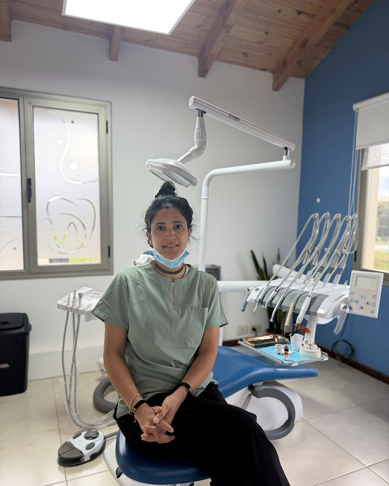
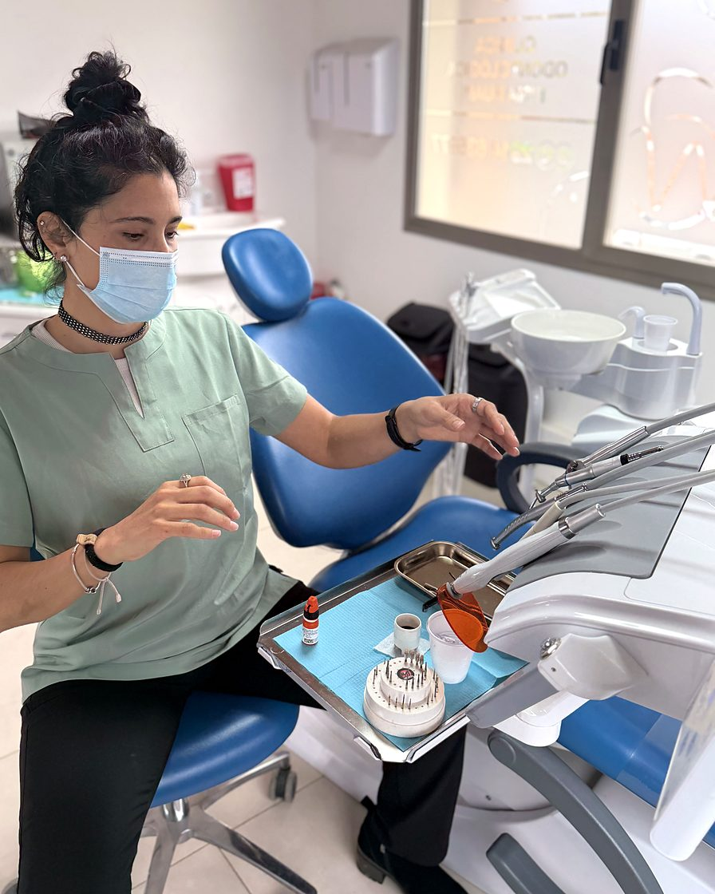
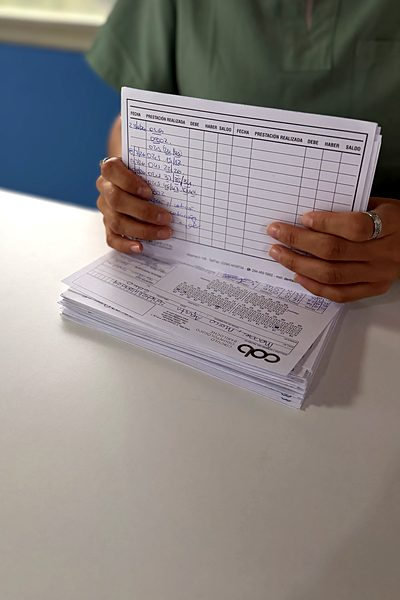
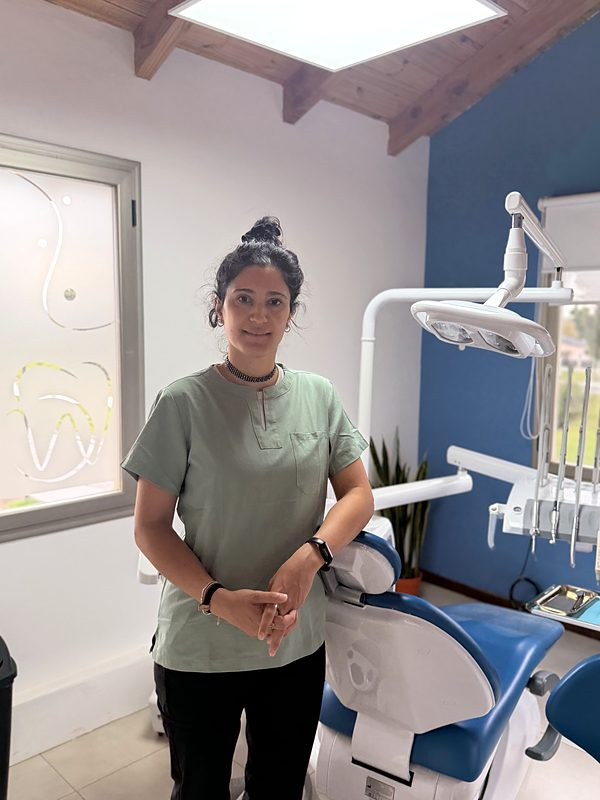
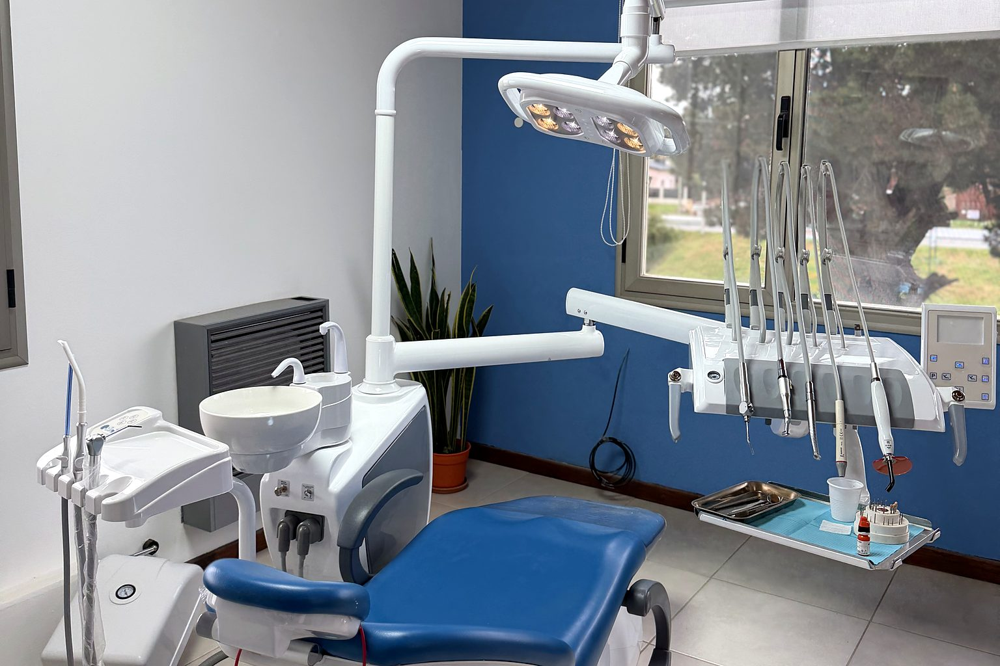
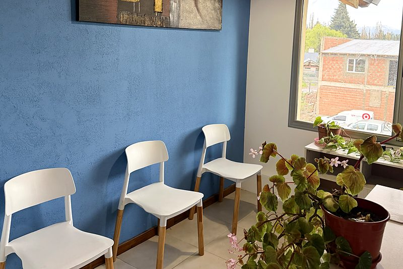
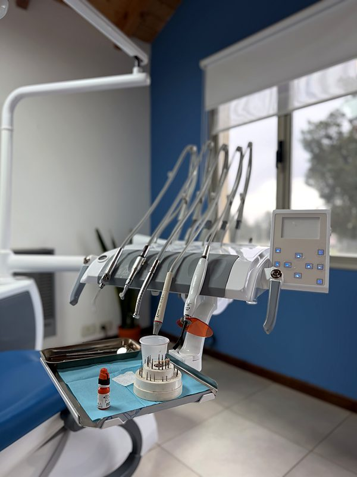

Controles y prevención
Limpieza, revisión y consejos para mantener la salud bucal en el tiempo.
Atendemos a toda la familia, desde los primeros controles de los niños hasta la ortodoncia y la estética en adultos. En cada consulta te explicamos el diagnóstico y las alternativas.

Turnos online¿En qué podemos ayudarte?


“Una sonrisa sana es mucho más que dientes alineados: es un niño que crece bien, un adulto que mastica sin molestias y una persona que se anima a sonreír. Eso es lo que cuidamos en cada consulta.”
Matrícula M.P. N.º
En la primera consulta evaluamos tu salud bucal, respondemos tus preguntas y te proponemos un plan de tratamiento pensado para vos.
Revisamos tu boca y, si hace falta, indicamos los estudios necesarios.
Te contamos lo que encontramos y las alternativas posibles, con palabras claras.
Te entregamos por escrito el plan, los plazos y el costo de cada etapa.
Atendemos a toda la familia con un mismo criterio: hacer lo necesario, en el orden adecuado.
Limpieza, revisión y consejos para mantener la salud bucal en el tiempo.
Caries, tratamientos de conducto y restauraciones para devolverle la salud a cada pieza.
Primeras visitas adaptadas a cada edad y ortopedia que acompaña el crecimiento.
Brackets metálicos o estéticos, para adolescentes y adultos.
Placas transparentes que se retiran para comer y apenas se notan.
Blanqueamiento y carillas para una sonrisa natural.
Armonización orofacial para realzar tus rasgos y fortalecer la confianza en tu imagen.
Diagnóstico y placas de descanso a medida para proteger los dientes del desgaste.
Para recuperar piezas dañadas o ausentes y volver a masticar con comodidad.

Fundadora del consultorio. Odontóloga general con diplomatura en armonización orofacial. Atiende a niños, adolescentes y adultos en ortodoncia, alineadores y ortopedia.
Un espacio luminoso, con equipamiento nuevo y esterilización propia de todo el instrumental. Lo que no se ve también se cuida.



Estados Unidos 860, Oficina D